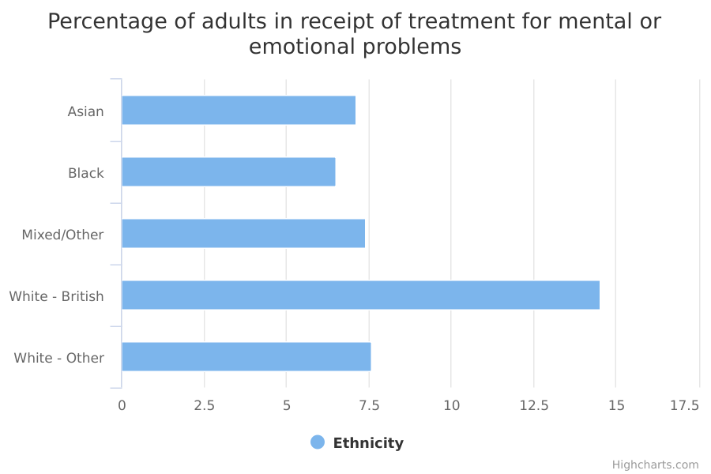

Adults receiving treatment for mental or emotional problems
The main facts and figures show that:
-
White British adults were around twice as likely as other ethnic groups to be receiving, at the time of the survey, some form of treatment for mental or emotional problems
-
Black British adults were least likely to, with 6.5% having treatment compared with 14.5% of White British adults
-
no other reliable (or ‘statistically significant’) differences between ethnic groups were observed for the proportion of respondents receiving treatment
Things you need to know
The Adult Psychiatric Morbidity Survey covers adults aged 16 or older who live in private households. It doesn’t include those who live in institutional settings or in temporary housing (such as hostels or bed and breakfasts) or those who sleep rough. People living in such settings are likely to have worse mental health than those living in private households. There were 7,528 respondents to the survey.
These statistics are based on participants’ direct responses (as opposed to someone else filling in the survey). As a result, socially undesirable or stigmatised feelings and behaviours may be under-reported. This is a risk with any survey based on self-reported data.
In this analysis, many apparent differences between ethnic groups in the types of treatment received were not statistically significant. This is in part due to the greater degree of uncertainty around observations based on small numbers of respondents - in this case the very small number of cases for certain minority ethnic groups.
The ethnic groupings used here are broad; there is no breakdown of data for the more specific ethnic groups each contains. Some of these specific ethnic groups have very different experiences to one another. For example, the Black/Black British ethnic group could include both recent migrants from Somalia and Black people born in Britain to British parents.
What the data measures
This data measures the percentage of adults (aged 16 or older) in different ethnic groups who were receiving some form of treatment for a mental or emotional problem at the time of interview.
Emotional problems include conditions such as anxiety and depression. Treatment includes medication used to treat psychiatric conditions, as well as counselling and other psychological therapies.
Why these ethnic categories were chosen
For this data, the number of people surveyed (the ‘sample size’) was too small to draw any firm conclusions about detailed ethnic categories. Therefore, the data is broken down into the following broad groups, based on the ONS harmonised ethnic group questions for use on national surveys.
- Asian/Asian British
- Black/Black British
- Mixed/Multiple and Other
- White British
- White Other
The percentage of adults in receipt of treatment for mental or emotional problems

| No treatment | Medication only | Counselling or therapy only | Both medication and counselling | Any treatment | |
| Asian | 92.9 | 4.2 | 2.6 | 0.4 | 7.1 |
|---|---|---|---|---|---|
| Black | 93.5 | 5.0 | 0.0 | 1.5 | 6.5 |
| Mixed/Other | 92.6 | 3.5 | 3.2 | 0.7 | 7.4 |
| White - British | 85.5 | 11.4 | 1.4 | 1.7 | 14.5 |
| White - Other | 92.4 | 6.2 | 0.9 | 0.4 | 7.6 |
Summary
-
White British adults were the most likely of all ethnic groups to report having any treatment at the time of interview (14.5%)
-
sample sizes were not large enough to draw conclusions about differences between ethnic groups in the types of treatment received
Download image and data
Methodology and type of data
Type of data
Survey
Purpose of data source
The Adult Psychiatric Morbidity Survey (APMS) series provides England's national statistics for the prevalence of mental illness and treatment access in the household population.
Methodology
Each survey involved interviewing a large stratified probability sample of the general population, covering people living in private households. The full adult age range was covered, with the youngest participants aged 16 and the oldest over 100.
The two-phase survey design involved an initial interview with the whole sample, followed up with a structured assessment carried out by clinically trained interviewers with a subset of participants. People were assessed or screened for a range of different types of mental disorder, from common conditions like depression and anxiety disorder through to less common neurological and mental conditions such as psychotic disorder, attention-deficit hyperactivity disorder (ADHD), and autism spectrum disorder (ASD).
The resulting statistics for treatment for a mental or emotional problem have been age-standardised. This is because the prevalence of mental or emotional problems is related to age and the age profile (the number of people of different ages within an ethnic group) can differ considerably between ethnic groups. This adjustment allows comparisons to be made between ethnic groups as if they had the same age profile.
Rates presented are based on participant self-reports, not health records. Misclassifications of type of treatment or service are possible.
The survey covers people who live in private households. It doesn’t include those who live in institutional settings or in temporary housing (such as hostels or bed and breakfasts) or those who sleep rough. People living in such settings are likely to have worse mental health than those living in private households (Gill et al. 1996; cited in APMS 2014).
Where a selected participant could not take part in a long interview due to a physical or mental health condition, some information about this was recorded by the interviewer on the doorstep. This information may be biased due to it having been collected often from another household member.
Socially undesirable or stigmatised feelings and behaviours may be underreported. While this is a risk for any study based on self-report data, the study goes some way to minimising this by collecting particularly sensitive information in a self-completion format.
Confidence intervals Confidence intervals for each ethnic group are available in the ‘download the data’ section and also available from the CSV downloads for ‘Adults receiving treatment for mental or emotional problems by ethnicity’.
14.5% of White British women surveyed reported receiving treatment for a mental or emotional problem. This is a reliable estimate of the White British women in England receiving treatment for a mental or emotional problem, but because the APMS results are based on a random sample of adults aged 16 or older it’s impossible to be 100% certain of the true percentage.
It’s 95% certain, however, that somewhere between 13.5% and 15.4% of all White British women were receiving treatment for a mental or emotional problem. In statistical terms, this is a 95% confidence interval. This means that if 100 random samples were taken, then 95 times out of 100 the estimate would fall in this range (ie between the upper and lower confidence interval). But 5 times out of 100 it would fall outside this range.
The smaller the survey sample, the more uncertain the estimate and the wider the confidence interval. For example, far fewer women from the Black/Black British ethnic group were sampled for this survey (197 Black/Black British respondents) than British White women, so we can be less certain about the estimate for the smaller group. This greater uncertainty is expressed by the wider confidence interval of between 4.0% and 10.4%.
Rounding
Percentages have been rounded to one decimal point.
Quality and methodology informationFurther technical information
[APMS 2014 Background Data Quality Statement] (http://content.digital.nhs.uk/catalogue/PUB21748/apms-2014-dq.pdf)
Data source details
Source
Adult Psychiatric Morbidity Survey: Survey of Mental Health and Wellbeing, England, 2014
Department
NHS Digital
Type of statistic
National statistic
Publication frequency
Every 7 years (further publications dependent on further surveys being commissioned)
Disclosure control
Risk to disclosure has been accounted for with limitations of the level of disaggregation, size of category groupings, and the maintaining of large underlying populations for analysis. No further suppression or other disclosure control has been applied.
Download the data
apms-mental-emotional-problems.csv
Percentage of individuals estimated to be experiencing common mental disorders by broad ethnic group, sex and type of common mental disorder with 95% confidence intervals.
View this page as JSON